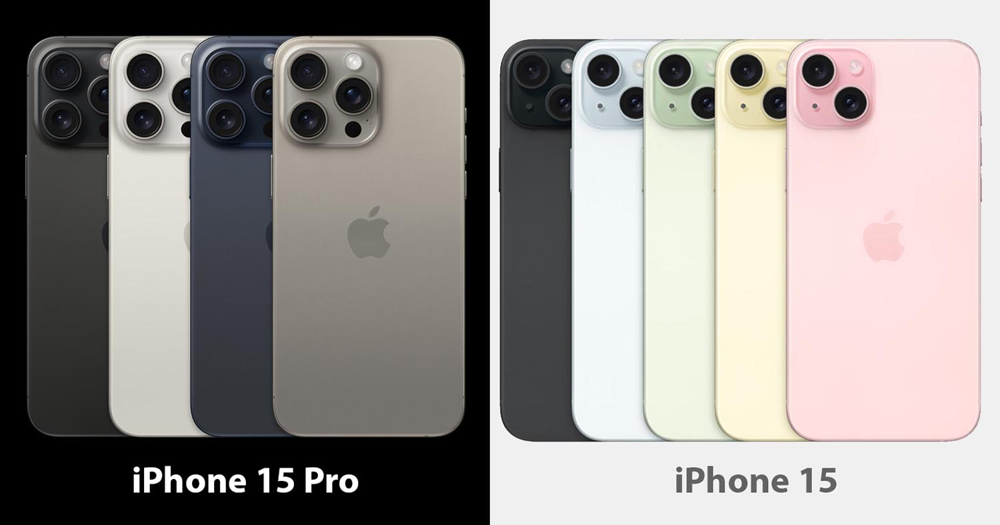
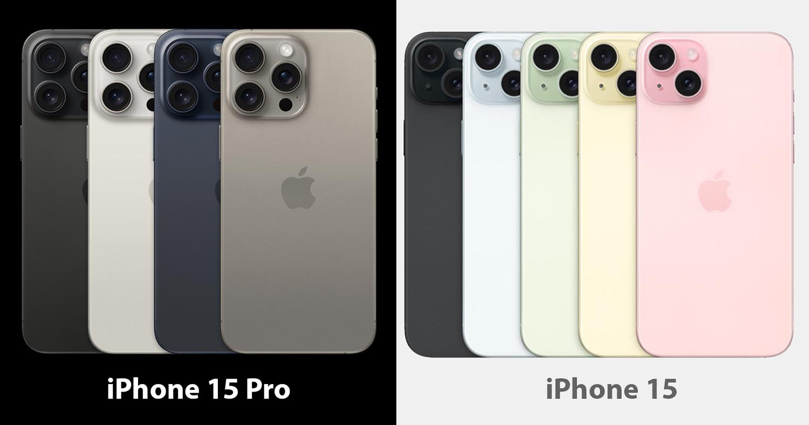

Apple kompaniyasi 12-sentabrdagi uzoq kutilgan taqdimotida Apple Watch 9, Apple Watch Ultra 2, iPhone 15, 15 Plus, 15 Pro va 15 Pro Max’ni namoyish qildi.
Asosiy yangiliklardan biri barcha taqdim etilgan iPhone’larda USB-C ulagichining paydo bo‘lishi. U ilgari Apple tomonidan telefonlarda qo‘llanilgan Lightning o‘rnini egallaydi. Kichik iPhone 15 va 15 Plus modellari ilgari faqat Pro modellarida mavjud bo‘lgan Dynamic Island’ni oldi. Telefon, shuningdek, ikkinchi avlod Ultra Wideband chipini ham oldi, buning yordamida masofada joylashgan qurilmalarga uch barobar tezroq ulanishi mumkin. Qurilmalarda ovozni izolyatsiya qilish funksiyasi ham mavjud.
 
